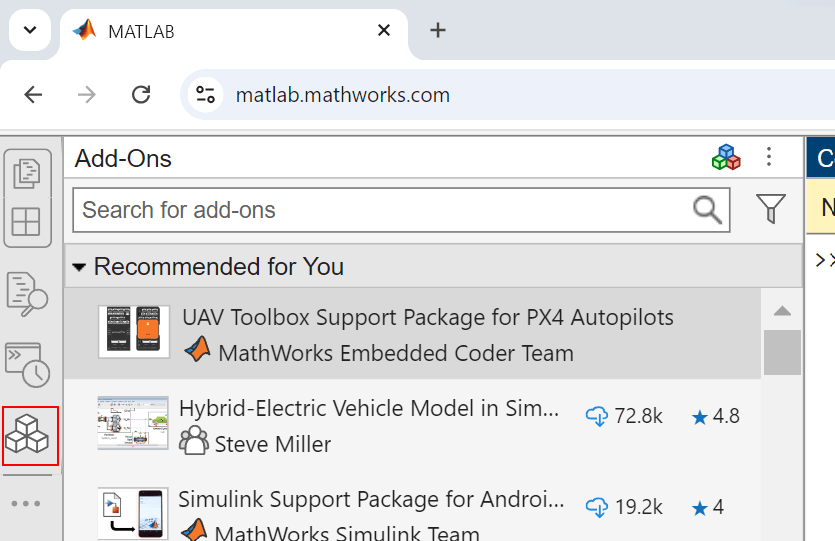
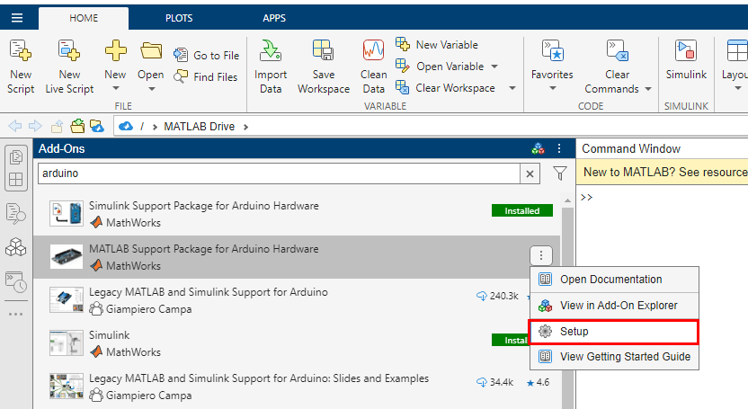
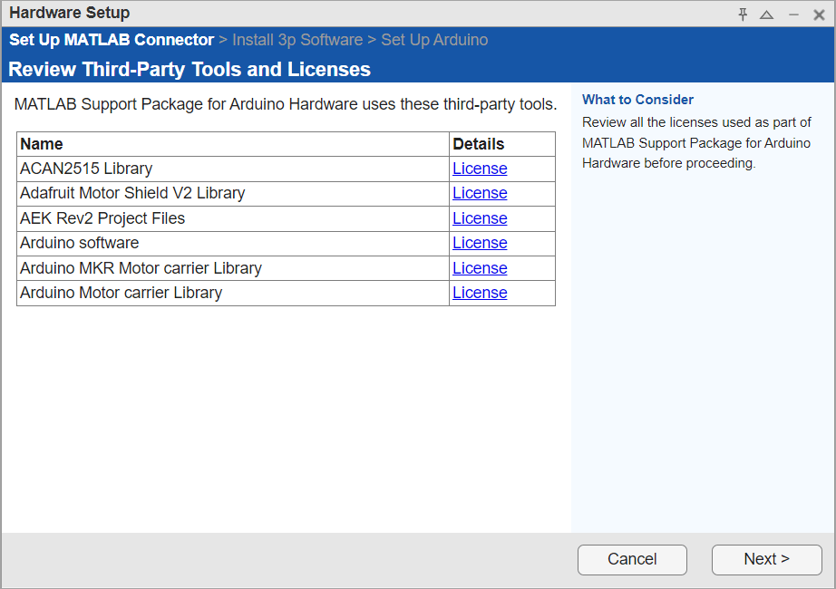
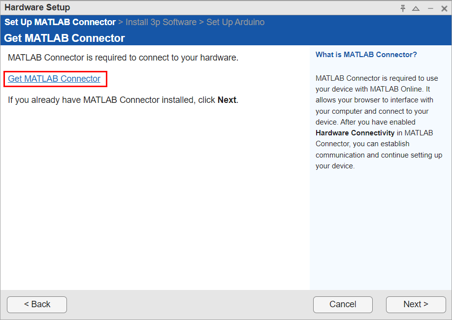
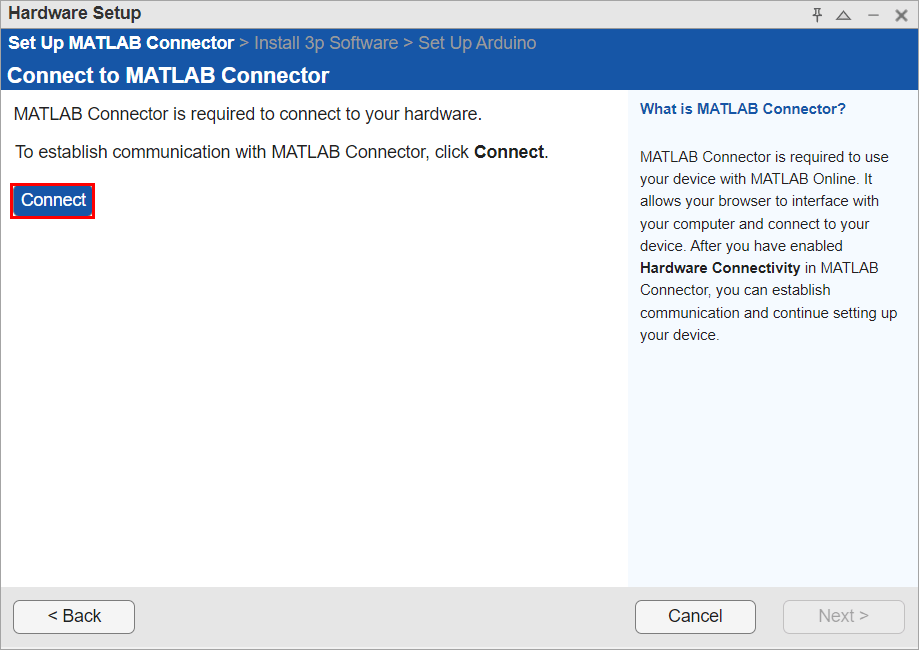
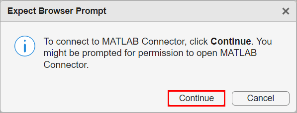
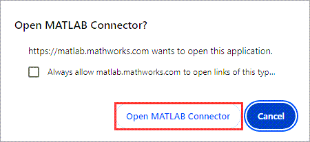
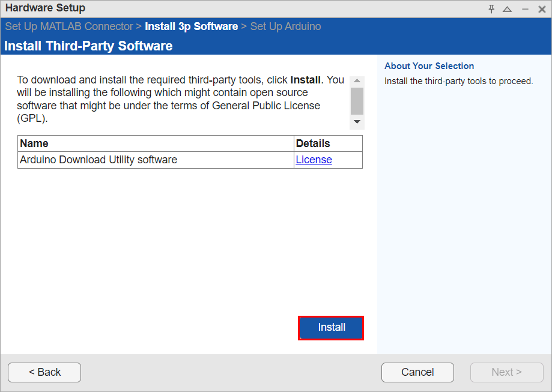

Get Started with MATLAB Online for Arduino
MATLAB® Support Package for Arduino® Hardware in MATLAB Online™ enables you to use MATLAB to communicate with Arduino hardware through your web browser. The support package is preinstalled in MATLAB Online. You can access MATLAB Online from any standard web browser. For more information, see Cloud Solutions Browser Requirements.
Install MATLAB Connector™ on the host computer that you use to interface your Arduino hardware with MATLAB Online and make sure that you have a stable and fast internet connection. For more information, see Install MATLAB Connector for Hardware Connectivity.
Supported Arduino Boards, Workflows, and Platforms on MATLAB Online
MATLAB Online supports these Arduino boards.
Arduino Uno
Arduino Uno R4 WiFi
Arduino Uno R4 Minima
Arduino Due
Arduino Mega 2560
Arduino Leonardo
Arduino Mega ADK
Arduino Micro
Arduino MKR1000
Arduino MKR WiFi1010
Arduino MKR Zero
Arduino Nano 3.1
Arduino Nano 33 IoT
Arduino Pro Mini
Sparkfun Digital Sandbox
Arduino Nano 33 BLE
Arduino Nano 33 BLE SENSE
MATLAB Support Package for Arduino Hardware in MATLAB Online supports all the standard workflows supported by the MATLAB desktop except for custom Arduino libraries and deploying MATLAB code as a standalone application using MATLAB Compiler™. Additionally, it only supports connection to the Arduino board over USB.
Currently, you can download and install MATLAB Connector on these platforms:
Windows®
Mac
Linux®
Connect and Set Up Arduino Board in MATLAB Online
Make sure you connect your Arduino board through USB to the same computer where you are using MATLAB in your web browser.
Note
If you are using a Linux operating system, make sure that your Arduino board uses a COM port that has read, write, and execute permissions.
To start using MATLAB Online, go to https://matlab.mathworks.com/, log in with your MathWorks® account credentials, and click the Open MATLAB Online button.
After you log in to MATLAB
Online, type arduinosetup in the MATLAB Command Window or follow these steps to launch the Hardware Setup
dialog box.
In MATLAB Online, click the Add-Ons icon
 in the sidebar to open the Add-Ons
panel.
in the sidebar to open the Add-Ons
panel.
Search for MATLAB Support Package for Arduino Hardware in Search for add-ons. Click the Add-Ons actions button next to the add-on and then select Setup from the menu to open the Hardware Setup dialog box.

The Hardware Setup dialog box provides step-by-step instructions to guide you as you review third-party licenses, set up MATLAB Connector if it is not already configured, install third-party software, and configure your Arduino board. Follow the instructions on each page of the Hardware Setup dialog box. Note the pop-up notifications that come from MATLAB Connector and allow permissions wherever required. For more information, see Security Considerations When Using MATLAB Online with Arduino.
Review Third-Party Tools and Licenses
In the Review Third-Party Tools and Licenses screen, review all the third-party tools, licenses, and cores that the support package requires. All the third-party tools are preinstalled with the support package.

Install and Set Up MATLAB Connector
Use the Set Up MATLAB Connector screen to install MATLAB Connector to enable connections to your hardware. Make sure you install the version of MATLAB Connector for the operating system that your browser is running on. After installing the MATLAB Connector, return to the browser where MATLAB Online is running and click Next in the Hardware Setup screen. For more information on how to use MATLAB Connector, click Get MATLAB Connector on the Hardware Setup screen.

Click Connect to establish a connection with the MATLAB Connector.

To proceed to connect to the MATLAB Connector, click Continue.

MATLAB Online displays a notification window requesting your permission to open MATLAB Connector. Click Open MATLAB Connector to proceed. This notification might look different in your browser.

MATLAB Connector requests your permission for MATLAB Online to establish a connection with your computer. For more information on the security considerations, see Security Considerations When Using MATLAB Online with Arduino.
Click Next once the connection is established with the MATLAB Connector.
For more information on how to troubleshoot issues regarding connecting with MATLAB Connector, see Troubleshooting MATLAB Connector Issues in Windows, Troubleshooting MATLAB Connector Issues in Mac, and Troubleshooting MATLAB Connector Issues in Linux.
Install Third-Party Software
Click Install to download and install third-party tools. MATLAB Connector prompts you to grant permission to install the software. Click Yes. For more information on the security considerations, see Security Considerations When Using MATLAB Online with Arduino.

Click Next once the third-party software installation process is complete.
Set Up Arduino
Connect the Arduino board and choose the options accordingly to complete your setup. The process to set up your Arduino board remains the same for MATLAB Online as for desktop MATLAB. For more information, see Connect to Arduino Board Over USB. When the hardware setup process is complete, you can open examples to get familiar with the support package and its features.
Note the pop-up notifications and allow permissions wherever required. For more information, see Security Considerations When Using MATLAB Online with Arduino.
Limitations
Note these limitations on using MATLAB Support Package for Arduino Hardware in MATLAB Online.
Users of MATLAB Online outside the US may experience slow performance due to network latency. For improved performance, use MATLAB desktop.
MATLAB Online only supports connection to the Arduino board over USB.
See Also
Install MATLAB Connector for Hardware Connectivity | Use MATLAB Connector to Connect to Hardware | Troubleshooting MATLAB Connector Issues in Windows | Troubleshooting MATLAB Connector Issues in Mac | Troubleshooting MATLAB Connector Issues in Linux | MATLAB Online | Cloud Solutions Browser Requirements | MATLAB Online Specifications and Limitations | Troubleshoot Arduino in MATLAB Online | Security Considerations When Using MATLAB Online with Arduino